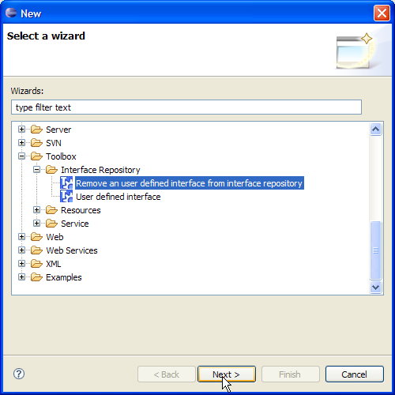
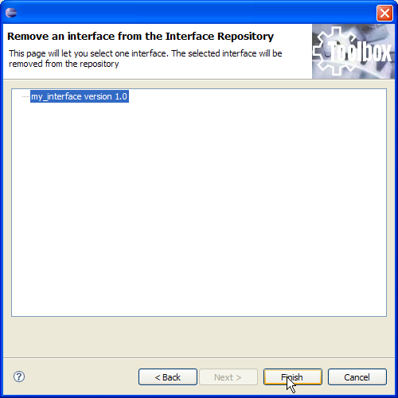

All user interfaces added to the Interface Repository (see here) can be easily removed. To achieve this goal, select "New/Other" from the "File" menu. The figure below shows the dialog that is displayed. Now select "Toolbox/Interface Repository/Remove an user defined interface from interface repository" and click "Next".

A list of user defined interfaces is provided. Select the interface to remove and click on "Finish". The interface is deleted and will be no more available.
